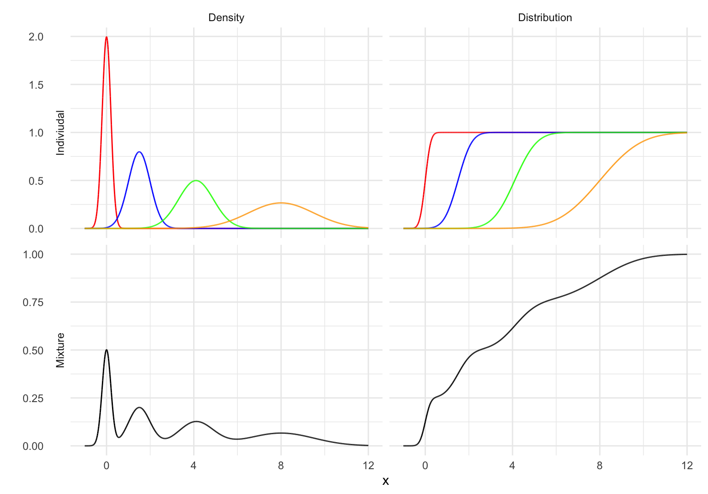
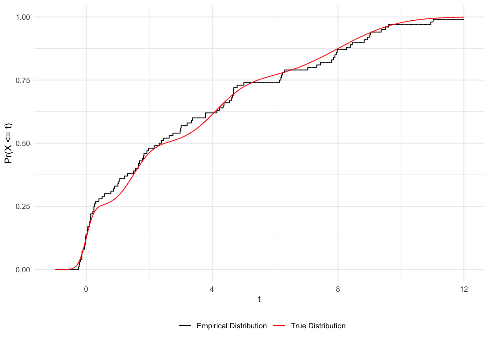
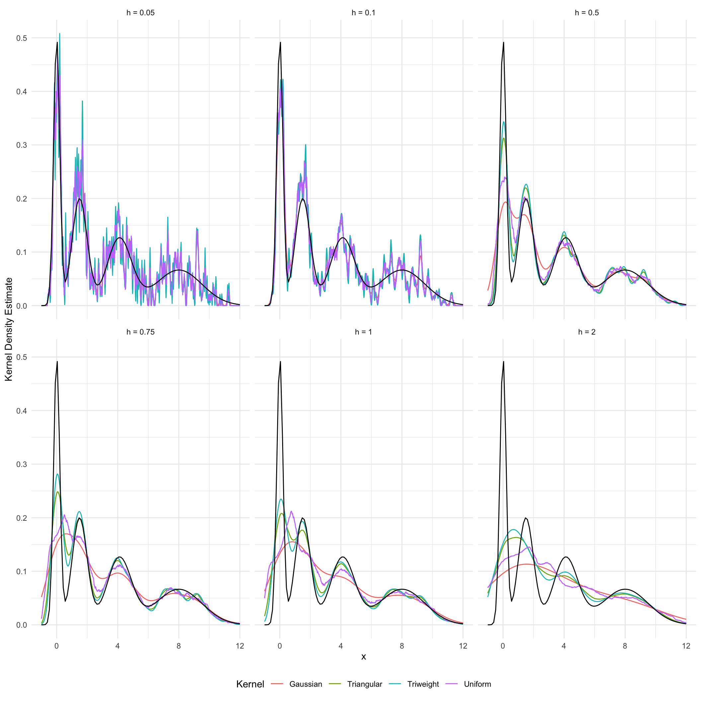

9 Nonparametrics I: Distribution and Density Estimation
Perhaps one of the most fundamental questions one can ask given observations of a random variable is “what distribution did these come from?” This section aims to answer this question under only one major assumption – the observed data is an IID sample.
Definition 9.1 Define the IID model as \[\mathcal P_\text{IID} = \left\{F_{\mathbf{X}_1,\ldots,\mathbf{X}_n} \mid F_{\mathbf{X}_1,\ldots,\mathbf{X}_n}\text{ is a valid distribution and } \mathbf{X}_i = \mathbf{X}_j\ \forall i\neq j \right\},\] or \[\mathcal P_\text{IID} = \left\{f_{\mathbf{X}_1,\ldots,\mathbf{X}_n} \mid f_{\mathbf{X}_1,\ldots,\mathbf{X}_n}\text{ is a valid density and } \mathbf{X}_i = \mathbf{X}_j\ \forall i\neq j \right\}.\] The model is parameterized by the common marginal distribution/density which we will write at \(F_{\mathbf{X}}\) and \(f_{\mathbf{X}}\).
Things get a bit annoying with notation as a result of models (roughly speaking) being the joint distribution of a sample. We’re interested in a situation where we observe \(n\) values of some random vector \(\mathbf{X}\) and want to estimate \(F_\mathbf{X}\) and/or \(f_\mathbf{X}\). This sample is a collection of identical random vectors \((\mathbf{X}_1,\ldots,\mathbf{X}_n)\), so the model is technically the collection of these joint distributions / densities. Of course, because \((\mathbf{X}_1,\ldots,\mathbf{X}_n)\) are identically distributed, considering the joint density is moot, and the model is identified by parameterizing it by the distribution / density of \(\mathbf{X}\). As such, we want to develop estimators \(\hat F_{\mathbf{X}}(\mathbf{x})\) and \(\hat{f}_\mathbf{X}(\mathbf{x})\). The novelty of this task comes from the fact that the parameter space, which is the set of all probability distributions or probability densities,1 has infinite dimension. This makes our model nonparametric.
For most of the section, we’ll handle the simple case of estimating the distribution and density of a random scalar \(X\), whose sample is the joint random vector \(\mathbf{X}= (X_1, \ldots, X_n)\). For many of the examples, we’ll simulate our data from a specific distribution that is sufficiently “weird” enough to give a sense for how estimators behave in the absence of “nice” distributions like the standard normal. This specific distribution will be mixed normal distribution that is defined in the following example.
Example 9.1 (Mixed Normal Distribution) Suppose we have \(L\) random variables \(X_\ell\). We can define a new random variable \(X\) by defining \(f_X\) to be a convex combination of each density \(f_{X_\ell}\), in effect “mixing” \(X_\ell\). For each \(\ell\), define a mixing probability \(p_\ell\) such that \(\sum_\ell p_\ell = 1\). Taking the linear combination of each density \(f_{X_\ell}\) with these weights gives \[ f_X(x) = \sum_{\ell=1}^Lp_\ell f_{X_\ell}(x).\] This process gives a random variable \(X\) with the following interpretation – with probability \(p_\ell\), \(X = X_\ell\).2 The distribution function of \(X\) is given by the analagous convex combination of distributions \(F_X\), as differentiation and integration are linear operations.
\[F_X(x) = \sum_{\ell=1}^Lp_\ell F_{X_\ell}(x)\]
Suppose we have four normally distributed random variables: \[\begin{align*} X_1 & \sim N(0, (0.2)^2),\\ X_2 & \sim N(1.5, (0.5)^2),\\ X_3 & \sim N(4.1, (0.8)^2),\\ X_4 & \sim N(8, (1.5)^2). \end{align*}\] Define \(X\) to be the mixture of these variables, where the mixing weights are all set to \(1/4\). Let’s define functions which give \(F_X\) and \(f_X\), along with one that draws random values of \(X\).
F_X <- function(x){
0.25*pnorm(x, mean = 0, sd = 0.2) +
0.25*pnorm(x, mean = 1.5, sd = 0.5) +
0.25*pnorm(x, mean = 4.1, sd = 0.8) +
0.25*pnorm(x, mean = 8, sd = 1.5)
}
f_X <- function(x){
0.25*dnorm(x, mean = 0, sd = 0.2) +
0.25*dnorm(x, mean = 1.5, sd = 0.5) +
0.25*dnorm(x, mean = 4.1, sd = 0.8) +
0.25*dnorm(x, mean = 8, sd = 1.5)
}
draw_X <- function(n){
# make n draws from (1,2,3,4) with equal probability
index <- sample(c(1,2,3,4), n, replace = TRUE)
(index == 1)*rnorm(n, mean = 0, sd = 0.2) +
(index == 2)*rnorm(n, mean = 1.5, sd = 0.5) +
(index == 3)*rnorm(n, mean = 4.1, sd = 0.8) +
(index == 4)*rnorm(n, mean = 8, sd = 1.5)
}To get a better sense of \(X\), let’s look at it’s distribution and density.
Show code which generates figure
expand_grid(x = seq(-1, 12, length = 1e5), func = c("Density", "Distribution")) %>%
mutate(
X1 = ifelse(func == "Density", dnorm(x, mean = 0, sd = 0.2), pnorm(x, mean = 0, sd = 0.2)),
X2 = ifelse(func == "Density", dnorm(x, mean = 1.5, sd = 0.5), pnorm(x, mean = 1.5, sd = 0.5)),
X3 = ifelse(func == "Density", dnorm(x, mean = 4.1, sd = 0.8), pnorm(x, mean = 4.1, sd = 0.8)),
X4 = ifelse(func == "Density", dnorm(x, mean = 8, sd = 1.5), pnorm(x, mean = 8, sd = 1.5)),
X = ifelse(func == "Density", f_X(x), F_X(x))
) %>%
gather("RV", "val", -x, -func) %>%
mutate(group = ifelse(RV == "X", "Mixture", "Indiviudal")) %>%
ggplot(aes(x, val, color = RV)) +
geom_line() +
scale_color_manual(values = c("black", "red", "blue", "green", "orange")) +
facet_grid(rows = vars(group), cols = vars(func), scales = "free", switch = "y") +
theme_minimal() +
theme(legend.position = "none") +
labs(y = "")
Later on, we’ll also be interested in the derivatives of the density \(f_X\). For any normally distributed random variable \(Y\), the first two derivatives of \(f_Y\) are: \[\begin{align*} f_Y'(y) & = -\frac{y-\mu}{\sigma^2}f_Y(y), \\ f_Y''(y) & = \left(\frac{(y-\mu)^2}{\sigma^4} -\frac{1}{\sigma^2}\right) f_Y(y). \end{align*}\] The density \(f_X\) is just a linear combination of various normal densities, so it’s derivatives are the linear combinations of the corresponding derivatives.
df_dx <- function(x){
- ((x-0)/0.2^2)*0.25*dnorm(x, mean = 0, sd = 0.2) -
((x-1.5)/0.5^2)*0.25*dnorm(x, mean = 1.5, sd = 0.5) -
((x-4.1)/0.8^2)*0.25*dnorm(x, mean = 4.1, sd = 0.8) -
((x-8)/1.5^2)*0.25*dnorm(x, mean = 8, sd = 1.5)
}
df2_dx2 <- function(x){
((x-0)^2/0.2^4 - 1/0.2^2)*0.25*dnorm(x, mean = 0, sd = 0.2) +
((x-1.5)^2/0.5^4 - 1/0.5^2)* 0.25*dnorm(x, mean = 1.5, sd = 0.5) +
((x-4.1)^2/0.8^4 - 1/0.8^2)*0.25*dnorm(x, mean = 4.1, sd = 0.8) +
((x-8)^2/1.5^4 - 1/1.5^2)*0.25*dnorm(x, mean = 8, sd = 1.5)
} Show code which generates figure
tibble(x = seq(-1, 12, length = 1e5)) %>%
mutate(
Density = f_X(x),
`First Derivative` = df_dx(x),
`Second Derivative` = df2_dx2(x)
) %>%
gather("func", "value", -x) %>%
ggplot(aes(x, value)) +
geom_line() +
facet_wrap(~func, ncol = 1, scales = "free") +
theme_minimal() +
labs(y = "")
9.1 Math Preliminaries
Until now, we’ve be focused on estimating parametric models, i.e models where parameters had finite dimension. Even more precisely, all the the estimands up until this point have been elements of \(\mathbb{R}^n\), a space we’re familiar with. Now that we’re concerned with estimating a probability density \(f,\) we’re estimating entire functions that belong to spaces of functions with infinite dimension. This will require the introduction of some light functional analysis. Some of this discussion will be similar to that in Section 5.15.
The space \(\mathbb{R}^k\) is a normed vector space equipped with, as the name implies, a special function called a norm which measures a vector’s distance from the origin. In the case of \(\mathbb{R}^k\), this norm is usually given as \[ \left\lVert\mathbf{x}\right\rVert_2 = \left(\sum_{i=1}^n x_i^2\right)^{1/2},\] and is called the Euclidean norm. Any norm can be used to define a metric (a function which measures the distance between two vectors), and in the case of \(\mathbb{R}^k\) we have \[ \left\lVert\mathbf{x}-\mathbf{y}\right\rVert_2 = \left(\sum_{i=1}^n (x_i-y_i)^2\right)^{1/2}.\] All we’ve done is introduce some definitions and notation to the familiar formula used to measure the distance between two points in Euclidean space. In general we can define the \(p\)-norm on \(\mathbb{R}^k\) as \[ \left\lVert\mathbf{x}\right\rVert_p = \left(\sum_{i=1}^n \left\lvert x_i\right\rvert^p\right)^{1/p}.\] If we let \(p = 2\), we end up with the Euclidean norm. Why bother considering other values of \(p\)? We can think of \(p\) as the way we weight the component-wise “distances” from the origin \(\left\lvert x_1\right\rvert,\left\lvert x_2\right\rvert,\ldots \left\lvert x_k\right\rvert\). For \(p = 2\), we square each of these distances (meaning the result is always positive rendering the absolute value moot), assigning more weight to components where \(x_i\) is relatively large.
Example 9.2 (p = 1) If we let \(p = 1\), the \(p\)-norm simplifies to
\[\left\lVert\mathbf{x}\right\rVert_1 = \sum_{i=1}^n \left\lvert x_i\right\rvert.\]
This norm induces the “taxi-cab metric”,
\[\left\lVert\mathbf{x}- \mathbf{y}\right\rVert_1 = \sum_{i=1}^n \left\lvert x_i - y_i\right\rvert,\] whose name follows from how you would define distance if you were driving between two points in a city with a grid layout.
Example 9.3 (Increasing p) What happens if we let \(p\) get arbitrarily large? Let’s plot \(\left\lVert\mathbf{x}\right\rVert_p\) for various values of \(\mathbf{x}\).
Show code which generates figure
p_norm <- function(p, x){
(sum(abs(x)^p))^(1/p)
}
tibble(x1 = c(1, 1, 1, 1),
x2 = c(0, 2, 2, 2),
x3 = c(0, 0, 3, 3),
x4 = c(0, 0, 0, -4)
) %>%
mutate(vector = ifelse(x4 == -4, "x = (1,2,3,-4)", ifelse(x3 == 3, "x = (1,2,3)", ifelse(x2 == 2, "x = (1,2)", "x = 1")))) %>%
expand_grid(p = seq(1,10, length = 100)) %>%
rowwise() %>%
mutate(norm = p_norm(p, c(x1, x2, x3, x4))) %>%
ggplot(aes(p, norm)) +
geom_line() +
facet_wrap(~vector, scales = "free") +
theme_minimal() +
labs(x = "p", y = "p-norm")
An interesting pattern comes to light – it appears that as \(p \to \infty\), \(\left\lVert\mathbf{x}\right\rVert_p\) approaches the largest possible value of \(\left\lvert x_i\right\rvert\).
As this example hints at, \[\left\lVert\mathbf{x}\right\rVert_{\infty} = \max_{x_i}\left\lvert x_i\right\rvert.\] As we let \(p\to\infty\), we put increasingly more weight on the components \(x_i\) which have the largest distance from \(0\) in their dimension. Eventually, \(p\) becomes so large that the contribution of \(\left(\max_{x_i}\left\lvert x_i\right\rvert\right)^p\) to the sum dwarfs those of the other components, and we end up with something which is practically \(\max_{x_i}\left\lvert x_i\right\rvert\) after taking the \(p\)-th root of the sum. The result of this limiting process gives \(\left\lVert\mathbf{x}\right\rVert_\infty\). An excellent way to illustrate this is by graphing the set \(\{\mathbf{x}\in \mathbb{R}^2 \mid \left\lVert\mathbf{x}\right\rVert_p = 1\}\), i.e the boundary of the unit ball in \(\mathbb{R}^2\) equipped with \(\left\lVert\cdot\right\rVert_p\).

So what does this all have to do with statistics and econometrics? Quite a bit if you consider the important role loss functions play in estimation. For a scalar estimator \(\hat \theta\), the quadratic loss function \(l(\hat\theta,\theta) = (\hat\theta - \theta)^2\) gave the special risk function known as mean square error. \[ \text{MSE}\left(\hat \theta \right)= \text{E}\left[(\hat\theta - \theta)^2\right].\]
If \(\hat{\boldsymbol{\theta}}\) is a vector, then we can write \(\text{MSE}\left(\hat{\boldsymbol{\theta}}\right)\) in terms of \(\left\lVert\cdot\right\rVert_2\).
\[\text{MSE}\left(\hat{ \boldsymbol{\theta}} \right)= \text{E}\left[\textstyle\sum_{i=1}^n(\hat\theta_i - \theta_i)^2\right] = \text{E}\left[\left\lVert\hat{\boldsymbol{\theta}} - \boldsymbol{\theta}\right\rVert_2^2\right].\]
In general, you’re welcome to define a risk function using the \(p\)-norm for any value of \(p\), and there may be situations which call for this depending on which components of \(\hat{\boldsymbol{\theta}}\) are deemed important.
\[R(\hat{\boldsymbol{\theta}}, \boldsymbol{\theta}) = \text{E}\left[\left\lVert\hat{\boldsymbol{\theta}} - \boldsymbol{\theta}\right\rVert_p^p\right]\]
Now we’re ready to extend this to vector spaces of functions. Suppose \(\mathcal F\) is a vector space of real valued functions \(f:\mathbb{R}^n\to\mathbb{R}\). For the sake of ease, let’s also assume all of these functions are continuous and bounded. In this case, \(f\) is defined at an uncountably infinite number of points, so we cannot possibly sum over values of \(\left\lvert f(\mathbf{x})\right\rvert^p\) for all \(\mathbf{x}\in\mathbb{R}\). Instead we’ll have to integrate over \(\mathbf{x}\). This gives
\[\left\lVert f\right\rVert_p =\left(\int_{-\infty}^\infty \left\lvert f(\mathbf{x})\right\rvert^p\ d\mathbf{x}\right)^{1/p}.\]
Just like in the case of Euclidean space, the \(p-\)norm also endows \(\mathcal F\) with a metric that measures the distance between two functions which belong to \(\mathcal F\). \[ \left\lVert f - g\right\rVert_p =\left(\int_{-\infty}^\infty \left\lvert f(\mathbf{x}) - g(\mathbf{x})\right\rvert^p\ d\mathbf{x}\right)^{1/p}\] For \(f\in \mathcal F\) we have \[ \left\lVert f\right\rVert_\infty = \sup_{\mathbf{x}\in \mathbb{R}^n}\left\lvert f(\mathbf{x})\right\rvert,\] where we take the supremum instead of maximum to account for the possibility that as \(p\to\infty\) \(\max_{\mathbf{x}\in \mathbb{R}^n}\left\lvert f(\mathbf{x})\right\rvert\) may approach a limit whose value it never takes on. This norm is particularly important because the role it plays in the convergence of sequences of functions. If we have a sequence of functions \(f_n\), then \(f_n\) converges to \(f\) uniformly if and only if \[ \lim_{n\to\infty}\left\lVert f_n - f\right\rVert_\infty = 0.\] For this reason, the supremum norm is also known as the “uniform norm”.
All of this can be defined for general vector spaces of functions, and not just the space of real valued functions which are bounded and continuous. It’s also possible to unify the separate discussions of \(\left\lVert\cdot\right\rVert_p\) on Euclidean space and \(\left\lVert\cdot\right\rVert_p\) on function spaces using a bit of measure theory.3
9.2 Estimating a Distribution
We’ll start with the task of developing an estimator \(\hat F_X\) for a random variable’s distribution function \(X\). The distribution \(F_X\) is defined as \[F_X(t) = \Pr(X \le t),\] so all we are doing is estimating a probability for all possible values of \(x \in \mathcal X\). If that sounds easy, it’s because it is. We can just look at the proportion of observations which are less than or equal to \(t,\) and take this to be \(\Pr(X \le t)\).
\[\hat F_X(t) = \frac{\text{number of observations} \le t}{\text{number of observations}}.\]
Definition 9.2 Given an IID sample of size \(n\) of a random variable \(X\), the empirical (cumulative) distribution function (eCDF) is defined as \[\hat F_X(t) = \frac{1}{n}\sum_{i=1}^n I\left[X_i \le t\right].\]
Example 9.4 Let’s calculate \(\hat F_X\) for our mixed normal distribution using a sample of size \(n = 100\).
emp_dist <- function(sample, t){
n <- length(sample)
sum(sample <= t)/n
}
n <- 100
X <- draw_X(n)
# calculate the estimate by calculating values on approximate support
F_hat <- sapply(seq(-1, 12, length = 1e5), emp_dist, sample = X)Now let’s plot the estimated distribution and contrast it with the versus the true distribution.
Show code which generates figure
tibble(x = seq(-1, 12, length = 1e5), `Empirical Distribution` = F_hat) %>%
mutate(`True Distribution` = F_X(x)) %>%
gather("func", "prob", -x) %>%
ggplot(aes(x, prob, color = func)) +
geom_line() +
scale_color_manual(values = c("black", "red")) +
labs(x = "t", color = "", y = "Pr(X <= t)") +
theme_minimal() +
theme(legend.position = "bottom") 
By construction, \(\hat F_X(x)\) is a discontinuous step function because it is the sum of discontinuous indicator functions. Nevertheless, \(\hat F_X\) looks pretty close to \(F_X\)!
9.3 Properties of the Empirical Distribution
9.3.1 Pointwise Properties
The challenge of determining the properties of \(\hat F_X\) comes from it being an entire function opposed to a single value. Let’s start with an easier task by reframing the problem to consider \(\hat F_X\) evaluated at some fixed point \(x_0\). That is, what are the pointwise properties of \(\hat F_X(x_0)\)?
First, let’s consider the bias of \(\hat F_X(x_0)\). The empirical distribution function is a linear combination of indicator functions, so taking its expectation is straightforward. \[\begin{align*} \text{E}\left[\hat F_X(x_0)\right] & = \text{E}\left[\frac{1}{n}\sum_{i=1}^n I\left[X_i \le x_0\right]\right]\\ & = \frac{1}{n}\sum_{i=1}^n \text{E}\left[I\left[X_i \le x_0\right]\right]\\ & = \frac{1}{n}\sum_{i=1}^n 1\cdot \Pr(X_i \le x_0) + 0\cdot \Pr(X_i > x_0) & (\text{definition of indicator})\\ & = \frac{1}{n}\left(n\cdot \Pr(X_i \le x_0)\right)\\ & = \Pr(X_i \le x_0)\\ & = F_X(x_0) \end{align*}\] The estimator, as perhaps anticipated, is unbiased. Now let’s calculate its variance. \[\begin{align*} \text{Var}\left(\hat F_X(x_0)\right) & = \text{Var}\left(\frac{1}{n}\sum_{i=1}^n I\left[X_i \le x_0\right]\right)\\ & = \frac{1}{n^2} \sum_{i=1}^n \left\{\text{E}\left[I\left[X_i \le x_0\right]^2\right] - \left(\text{E}\left[I\left[X_i \le x_0\right]\right]\right)^2\right\}\\ & = \frac{1}{n^2} \sum_{i=1}^n \left\{\text{E}\left[I\left[X_i \le x_0\right]\right] - \left(\text{E}\left[I\left[X_i \le x_0\right]\right]\right)^2\right\} & (I\left[X_i \le x_0\right]^2 = I\left[X_i \le x_0\right])\\ & = \frac{1}{n^2} \sum_{i=1}^n \left[\Pr(X_i \le x_0) - \Pr(X_i \le x_0)^2\right] & (\text{E}\left[I\left[X_i \le x_0\right]\right] = \Pr(X_i \le x_0))\\ & = \frac{1}{n^2}[n\Pr(X_i \le x_0)(1- \Pr(X_i \le x_0))]\\ & = \frac{F_X(x_0)(1-F_X(x_0))}{n} \end{align*}\] If calculating the expectation and variance of \(\hat F_X(x_0)\) feels “familiar”, that may be because we’ve just calculated the expected value and variance of a binomial random variable. Define \(Y = n\hat F_X(x)\) such that \[ Y = \sum_{i=1}^n I\left[X_i \le x_0\right].\] The random variable \(Y\) is the sum of \(n\) Bernoulli trials, each with succeeding with probability \(\Pr(X_i \le x_0) = F_X(x_0)\), meaning \(Y \sim \text{Bernoulli}(n, F_X(x_0))\). As such, we can just appeal to the expected value and variance of \(Y\) to calculate the corresponding moments for \(\hat F_X(x)\). \[\begin{align*} \text{E}\left[\hat F_X(x)\right] & = \text{E}\left[\frac{1}{n}Y\right] = \frac{1}{n}\left(nF_X(x_0)\right) = F_X(x_0)\\ \text{Var}\left(\hat F_X(x)\right) & = \text{Var}\left(\frac{1}{n}Y\right) = \frac{1}{n^2}\left(nF_X(x_0)(1-F_X(x_0))\right) = \frac{F_X(x_0)(1-F_X(x_0))}{n} \end{align*}\]
Noting that \(\lim_{n\to\infty}\text{Var}\left(\hat F_X(x_0)\right) = 0\), Corollary 2.2 establishes that \(\hat F_X(x_0)\) is consistent. \[ \hat F_X(x_0) \overset{p}{\to}F_X(x_0)\] Finally, because \(\hat F_X(x_0)\) is the average of independent Bernoulli trials, so we can apply the CLT to conclude that \(\sqrt n[\hat F_X(x_0)- F_X(x_0)] \overset{d}{\to}N(0, F_X(x_0)(1-F_X(x_0)))\).
Theorem 9.1 (Pointwise Properties of Empirical Distribution) The empirical distribution function \(\hat F_X(x_0)\), evaluated at a fixed point \(x_0\), exhibits the following properties:
- Unbiasedness, \(\text{E}\left[\hat F_X(x_0)\right] = F_X(x_0)\);
- \(\text{Var}\left(\hat F_X(x_0)\right) = \frac{F_X(x_0)(1-F_X(x_0))}{n}\);
- Consistency, \(\hat F_X(x_0) \overset{p}{\to}F_X(x_0)\);
- Asymptotic Normality, \(\hat F_X(x_0) \overset{a}{\sim}N(0, F_X(x_0)(1-F_X(x_0))/n)\).
Example 9.5 To illustrate these properties, let’s simulate the estimation of \(F_X(0)\) where \(X\) is distributed according to the mixed normal distribution we’ve been using. First, let’s see what the true value of \(F_X(X_0)\) is, along with \(F_X(X_0)(1-F_X(X_0))/n\).
n <- 100
x_0 <- 0
F_X(x_0)[1] 0.1253375(1 - F_X(x_0))*F_X(x_0)/n[1] 0.00109628For our first simulations, we’ll simulate one million estimates using samples of size \(n = 1,000\).
N_sim <- 1e6
estimates <- vector("numeric", length = N_sim)
for (k in 1:N_sim) {
X <- draw_X(n)
estimates[k] <- emp_dist(X, x_0)
}
mean(estimates)[1] 0.1253935var(estimates)[1] 0.001099587The simulated expectation and variance are in line with our calculations. Let’s now look at the histogram of our values compared with the theoretical limiting distribution.
Show code which generates figure
tibble(estimates) %>%
ggplot(aes(estimates)) +
geom_histogram(aes(y = ..density..), fill = "white", color = "black", binwidth = .01) +
stat_function(fun = dnorm, args = list(mean = F_X(x_0), sd = sqrt((1 - F_X(x_0))*F_X(x_0)/n)), color = "red") +
theme_minimal() +
labs(x = "Empirical Distribution Evaluated at 0", y = "Density")
A second set of simulations for varying sample sizes can illustrate consistency.
N_sim <- 1e4
estimates <- vector("numeric", length = N_sim)
for (n in 1:N_sim) {
X <- draw_X(n)
estimates[n] <- emp_dist(X, x_0)
}Show code which generates figure
tibble(n = 1:N_sim, estimates) %>%
ggplot(aes(n, estimates)) +
geom_line() +
geom_hline(yintercept = F_X(x_0), color = "red", linetype = "dashed") +
labs(y = "Empirical Distribution Evaluated at 0", x = "Sample Size, n") +
theme_minimal()
Example 9.6 (Confidence Intervals) It’s possible to construct pointwise confidence intervals using the fact that \(\hat F_X(x_0) \overset{a}{\sim}N(0, F_X(x_0)(1-F_X(x_0))/n)\). A level \((1-\alpha)\) confidence interval for \(F_X(x_0)\) would be given by \[ \left[\hat F_X(x_0) - \Phi^{-1}(1-\alpha/2)\sqrt{\frac{\hat F_X(x_0)(1-\hat F_X(x_0))}{n}}, \hat F_X(x_0) + \Phi^{-1}(1-\alpha/2)\sqrt{ \frac{\hat F_X(x_0)(1-\hat F_X(x_0))}{n}}\right].\] If we want to construct these intervals for multiple values of \(F_X(x_0)\), we need to be careful because they’re pointwise. For the sake of illustration, let’s construct these confidence intervals (taking \(\alpha=0.05\)) over the support of \(F_X\) and graph our results.
n <- 100
X <- draw_X(n)
CI <- function(a, sample, t){
n <- length(sample)
F_hat <- emp_dist(sample, t)
lower <- F_hat - qnorm(1 - a/2)*sqrt((F_hat*(1-F_hat))/n)
upper <- F_hat + qnorm(1 - a/2)*sqrt((F_hat*(1-F_hat))/n)
return(c(lower, upper))
}
F_hat <- sapply(seq(-1, 12, length = 1e5), emp_dist, sample = X)
F_CI <- sapply(seq(-1, 12, length = 1e5), CI, a = 0.05, sample = X)Let’s plot our confidence intervals along the support of \(F_X\).
Show code which generates figure
t(F_CI) %>%
as_tibble() %>%
rename(
lower = V1,
upper = V2
) %>%
mutate(
x = seq(-1, 12, length = 1e5),
F_hat = F_hat
) %>%
ggplot(aes(x, F_hat)) +
geom_line(aes(color = "Empirical Distribution")) +
geom_ribbon(aes(ymin = lower, ymax = upper, fill = "95% (Pointwise) Confidence Interval"), alpha = 0.3) +
theme_minimal() +
scale_color_manual(values = c("black")) +
scale_fill_manual(values = c("black")) +
labs(x = "t", y = "Pr(X < t)", color = "", fill = "") +
theme(legend.position = "bottom") 
How do we interpret these intervals? For each separate \(x_0\) there is a 95% chance our interval contains the true value \(F_X(x_0)\). It is not the case that there is a 95% chance that the entire function \(\hat F_X\) is contained in the interval, because we’re not considering the behavior of \(\hat F_X\) as a function yet.
9.3.2 Empirical Process Theory
Let’s now change gears and consider the properties of \(\hat F_X\) as a function, and not just the properties of \(\hat F_X(x_0)\) for some fixed \(x_0\). The study of \(\hat F_X\) as an entire function is the subject of empirical process theory, which is a fairly technical branch of asymptotic theory.
Definition 9.3 The function \(t \mapsto \hat F_X(t)\) is an empirical process.
When considering the properties of \(\hat F_X\) as an empirical process, we need to think about it as an element of a space of functions. Instead of looking at the discrepancy of \(\hat F_X(t) - F_X(t)\) for a fixed \(t\), we will work with \[\left\lVert\hat F_X - F_X\right\rVert_p = \left(\int_{\mathcal X} \left\lvert\hat F_X(t) - F_X(t)\right\rvert^p\ dt \right)^{1/p}.\] In particular, we’ll focus on the case where \(p=\infty\), \[\left\lVert\hat F_X - F_X\right\rVert_\infty = \sup_{t\in\mathcal X}\left\lvert\hat F_X(t) - F_X(t)\right\rvert.\] Not only is the supremum norm the conservative choice because it assess \(\hat F_X\) at the point where the discrepancy \(\left\lvert\hat F_X(t) - F_X(t)\right\rvert\) is the “largest”4, but \(\left\lVert\cdot\right\rVert_\infty\) is also used to define uniform convergence.
The first, and perhaps most important, result about \(\hat F_X(t)\)’s behavior as a function of \(t\) involves consistency. We know that \(\hat F_X(t)\overset{p}{\to}F_X(t)\) for each separate \(t\), but does this convergence occur uniformly for all \(t\)?
As famously shown by Glivenko (1933) and Cantelli (1933).
Theorem 9.2 (Glivenko-Cantelli) If \(X_1,\ldots,X_n\) are IID random variables with a distribution \(F_X\), then \[ \left\lVert\hat F_X - F_X\right\rVert_\infty \overset{p}{\to}0.\]
Proof. See
Example 9.7 If we take the Glivenko-Cantelli theorem at face value, then illustrating it is a matter of looking at \(\left\lVert\hat F_X - F_X\right\rVert_\infty\) for simulated samples of increasing size \(n\).
N_sim <- 1e3
sup_diff <- vector("numeric", N_sim)
for (n in 1:N_sim) {
X <- draw_X(n)
F_hat <- sapply(seq(-1, 12, length = 1e5), emp_dist, sample = X)
F_0 <- sapply(seq(-1, 12, length = 1e5), F_X)
sup_diff[n] <- max(abs(F_hat - F_0))
}Show code which generates figure
tibble(
n = 1:N_sim,
sup_diff
) %>%
ggplot(aes(n, sup_diff)) +
geom_line() +
geom_hline(yintercept = 0, color = "red", linetype = "dashed") +
labs(y = "sup |eCDF - CDF|", x ="Sample Size, n") +
theme_minimal() 
While this illustration corroborates the Glivenko-Cantelli theorem, it doesn’t look at it through the lens that matters. A better way to visualize the theorem is by looking at how the shape of \(\hat F_X\) behaves as \(n\to\infty\).
estimates <- list()
iter <- 0
for (n in c(10, 25, 50, 100, 500, 1000)) {
iter <- iter + 1
X <- draw_X(n)
F_hat <- sapply(seq(-1, 12, length = 1e5), emp_dist, sample = X)
estimates[[iter]] <- tibble(F_hat, n , x = seq(-1, 12, length = 1e5))
}Show code which generates figure
estimates %>%
bind_rows() %>%
ggplot(aes(x, F_hat)) +
geom_line(color = "red") +
facet_wrap(~n) +
stat_function(fun = F_X, alpha = 0.3) +
theme_minimal()
As \(n\to\infty\), it does in fact appear that the empirical distribution \(\hat F_X\) converges to the true distribution \(F_X\) uniformly, and not just pointwise.
The key theorem in empirical process theory gives the limiting distribution of the standardized empirical process \(\sqrt{n}(\hat F_X - F)\). We already know that \[\sqrt n[\hat F_X(x_0)- F_X(x_0)] \overset{d}{\to}N(0, F_X(x_0)(1-F_X(x_0)))\] for all fixed \(x_0\), but showing the analogous result for the empirical process \(\sqrt{n}(\hat F_X - F)\) requires a bit more care. One needs to make sure that \(\hat F_X\) “behaves well” on its support.5 Hansen (2022) provides a nice discussion of this, while omitting many of the technical details that can be found in Van der Vaart (2000).
Theorem 9.3 (Donsker’s Theorem) If \(X_1,\ldots,X_n\) are IID random variables with a distribution \(F_X\), then \[ \sqrt{n}.\]
Proof. See Theorem 19.3 and Theorem 19.5 of Van der Vaart (2000).
Massart (1990)
Proposition 9.1 (DKW Inequality) See
Proof. See Massart (1990).
Example 9.8 (Confidence Bands) t
n <- 1000
X <- draw_X(n)
F_hat <- sapply(seq(-1, 12, length = 1e5), emp_dist, sample = X)
F_0 <- sapply(seq(-1, 12, length = 1e5), F_X)
tibble(
x = seq(-1, 12, length = 1e5),
y = sqrt(n) * (F_hat - F_0)
) %>%
ggplot(aes(x,y)) +
geom_line() +
theme_minimal()
Proposition 9.2 (Goodness of Fit Statistics) t
Proof. See Corollary 19.21 of Van der Vaart (2000). The proof amounts to an application of the continuous mapping theorem to Theorem 9.3.
Proof. See Corollary 19.21 of Van der Vaart (2000). The proof amounts to an application of the continuous mapping theorem to Theorem 9.3.
9.4 From Estimating Distributions to Estimating Densities
Definition 9.4 A kernel function \(K:\mathbb{R}\to\mathbb{R}\) is a function satisfying \[ \int_{-\infty}^\infty K(u)\ du = 1.\] It is often convenient to assume \(K\) is nonnegative, and symmetric: \[\begin{align*} K(u) & = K(-u) & \forall u\in \mathbb{R}\\ K(u) & \ge 0 & \forall u\in \mathbb{R} \end{align*}\]
Remark. This definition of a kernel function in this context is very specific. In general, kernels are generalized versions of positive-definite functions and positive-definite matrices. For instance, when working with spaces of functions there are many situations where we want to apply a transformation to some function \(f\) via integration, giving us another function using some “kernel function” \(K\): \[ (Tf)(u) = \int_{a}^{b}f(x)\cdot K(u,x)\ dx\] On famous example of such a transform is the Fourier transform of a function \(f\), given as \[ \tilde f(t) = \int_{-\infty}^\infty f(x)\cdot e^{-i2\pi t x}\ dx.\] In this case the kernel function is \(K(u,x)=e^{-i2\pi t x}\). Kernel transformations also appear in probability and statistics,6 The density of the sum of two independent random variables, say \(Z = Y + X\), is given as \[ f_Z(t) = \int_{-\infty}^\infty f_X(x)\cdot f_Y(u-x)\ dx.\] The kernel associated with this transformation is \(K(u,x)= f_Y(u-x)\).
Definition 9.5 KDE estimator
Remark. convolution
kde <- function(x, sample, K, h){
# sample size
n <- length(sample)
#calculate the kernel density estimate at x
(1/(n*h)) * sum(K((x - sample)/h))
}uniform <- function(x){
(1/2)*(abs(x) <= 1)
}
triangular <- function(x){
(1 - abs(x))*(abs(x) <= 1)
}
triweight <- function(x){
(35/32*(1-x^2)^3)*(abs(x) <= 1)
}
gauss <- function(x){
dnorm(x)
}#| code-fold: true
#| fig-align: center
#| fig-asp: 1
#| fig-width: 11
#| fig-cap: "Distribution of estimators for the population variance"
#| code-summary: "Show code which generates figure"
tibble(
x = seq(-2, 2, length = 10000),
Uniform = uniform(x),
Triangular = triangular(x),
Triweight = triweight(x),
Gaussian = gauss(x)
) %>%
gather("Kernel", "val", -x) %>%
ggplot(aes(x, val, color = Kernel)) +
geom_line() +
theme_minimal() +
theme(legend.position = "bottom") +
labs(y = "Density")
X <- draw_X(1000)
#set elements to loop over and support to calculate KDE on
kernels <- c(uniform, triangular, triweight, gauss)
kernel_names <- c("Uniform", "Triangular", "Triweight", "Gaussian")
bandwidths <- c(.05, .1, .5, 0.75, 1, 2)
support <-seq(-1, 12, length = 1e3)
estimates <- expand_grid(x = support,
h = bandwidths,
ker_index = 1:4
) %>%
rowwise() %>%
mutate(
f_est = kde(x, sample = X, K = kernels[[ker_index]], h),
Kernel = kernel_names[ker_index]
)Show code which generates figure
estimates %>%
mutate(h = paste("h =", h)) %>%
ggplot(aes(x, f_est, color = Kernel)) +
geom_line() +
geom_function(fun = f_X, color = "black") +
facet_wrap(~h) +
theme_minimal() +
labs(color = "Kernel", y = "Kernel Density Estimate") +
theme(legend.position = "bottom")
9.5 Properties of the Kernel Density Estimator
9.6 Kernel Selection
9.7 Bandwidth Selection
9.7.1 Silverman’s Rule of Thumb
9.7.2 Cross-Validation
9.8 Multivariate KDE
9.9 Extensions
9.10 Further Reading
Empirical Process Theory: Chapter 19 of Van der Vaart (2000), Chapter 18 of Hansen (2022), these notes, or these notes
Kernels: https://www.randomservices.org/random/expect/Kernels.html
chrome-extension://efaidnbmnnnibpcajpcglclefindmkaj/http://amadeus.csam.iit.edu/~fass/PDKernels.pdf
I’m not going to be formal with defining these parameter spaces.↩︎
Keep in mind that this is not the same as defining \(X\) as \(X = \sum_\ell X_\ell\). There is a difference between defining it using the convex combination of densities and simply taking it to be the convex combination of the random variables.↩︎
These spaces both are special cases of what is known as an \(L^p\) space, with \(L^2\) being of particularly interest because it is the only \(L^p\) space that is a Hilbert space.↩︎
Kind of but not really because \(\sup\) instead of \(\max\).↩︎
In this case behaves well means that the sequence \(\hat F_X\) over sample sizes \(n\) is asymptotically/stochastically equicontinuous. If you’ve taken a real analysis course, the term equicontinuity may seem familiar as it’s an extension of uniform continuity to a collection of functions. If the collection of \(\hat F_X\) over sample sizes \(n\) is asymptotically equicontinuous, then for all \(n\), \(\hat F_X\) converges uniformly in probability. The magic of uniform convergence is it allows us to interchange many limiting processes, and in this case allows us to conclude that the entire empirical process converges to something related to a normal distribution.↩︎
This is not to say that the Fourier transformation doesn’t play an important role in probability and statistics. In fact, quite the opposite. The Fourier transformation of a density function is the characteristic functionof a random variable, a function with some magical properties.↩︎